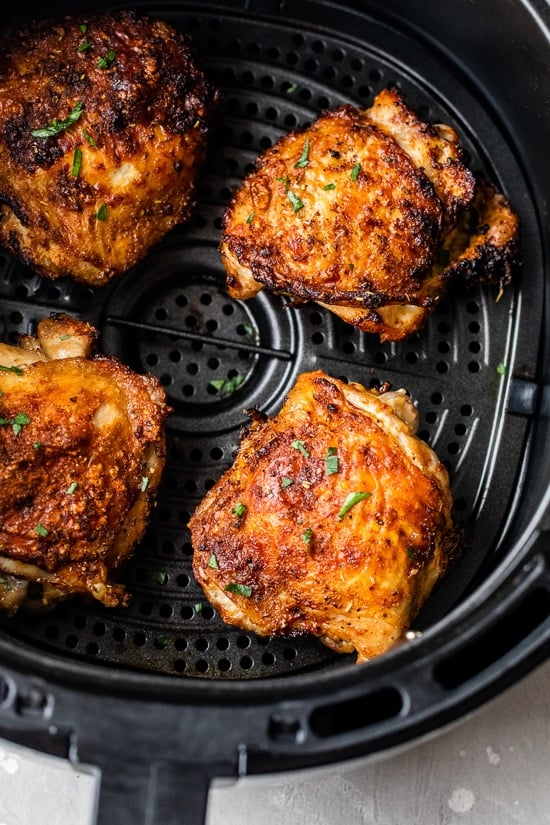

Air-Fried Chicken

Description
This is a recipe for air-fryer chicken. Cooking chicken in an air fryer results
in an easy, crispy dish that comes out relatively healthy and cheap.
Ingredients
- Chicken
Chicken parts to be cooked. Depending on the part, cooking times will vary.
Here are some suggestions:
- Breasts: 15 minutes
- Drumsticks, bone-in: 18 minutes
- Thighs, bone-in: 20 minutes
- Paprika
- Garlic powder
- Salt
- Olive oil
Steps
- Pat-dry the chicken with a paper towel.
This ensures the chicken comes out super crispy.
- Brush the chicken with olive oil.
- Sprinkle the paprika and salt on the chicken.
- Pre-heat the air fryer at 200ºC for 5 minutes.
- Cook the chicken in the air-fryer (see the suggested cooking times above), flipping half-way through.